Aromas Cítricos
Fragancias llenas de energía, vitalidad y frescura natural. Dominadas por notas chispeantes de bergamota, limón, pomelo y mandarina, perfectas para energizar tu día a día.
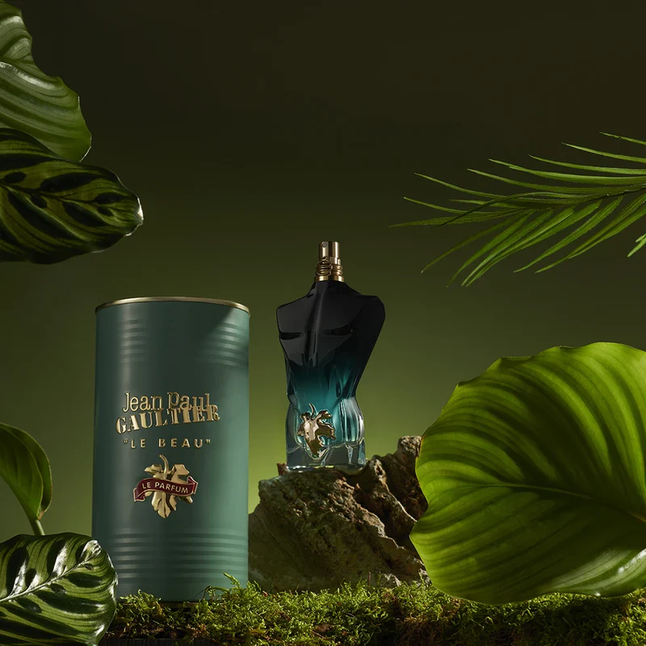
Le Beau
Notas vibrantes de bergamota combinadas con un exótico corazón de madera de coco y la calidez del haba tonka.
Le Beau
Un viaje olfativo que inicia con la frescura frutal de la bergamota, transitando hacia un corazón de madera de coco, y cerrando con la calidez adictiva del haba tonka.
- • Concentración: Eau de Toilette
- • Duración promedio: 6 a 8 horas
- • Estación ideal: Primavera / Verano
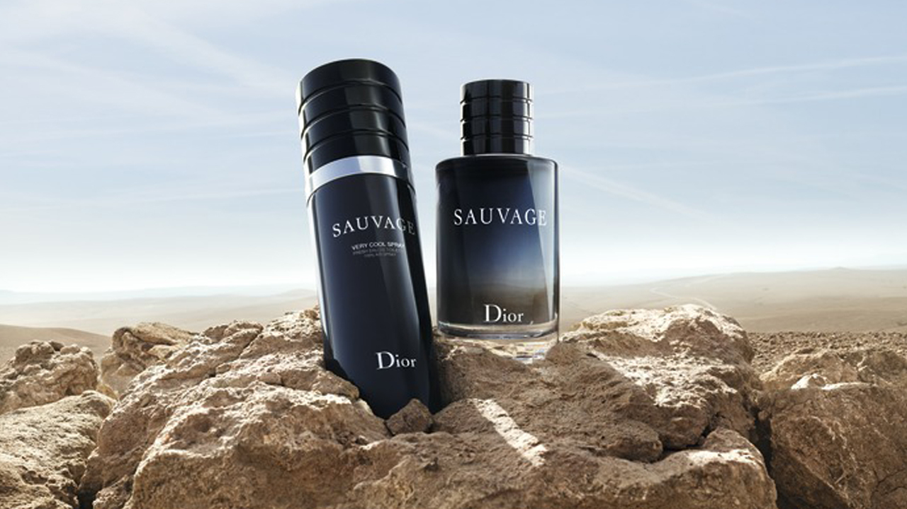
Sauvage Very Cool
Una explosión cítrica reforzada con bergamota de Reggio Calabria y un toque fresco de toronja sobre una base amaderada.
Sauvage Very Cool Spray
Variación ultra radiante del clásico Sauvage. Destaca por una apertura cítrica dominante y desinhibida con matices pimienta y ambroxan.
- • Concentración: Eau de Toilette
- • Duración promedio: 7 a 8 horas
- • Estación ideal: Días calurosos / Uso casual
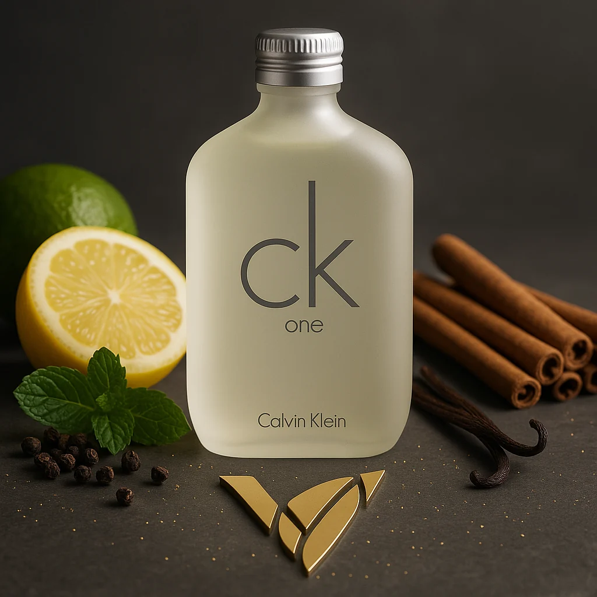
CK One Citrus
Icónica mezcla equilibrada de limón, bergamota, mandarina y piña con un acorde verde purificante.
CK One Citrus Blend
Un estándar mundial de frescura limpia e informal. Transmite pureza inmediata con un equilibrio perfecto entre cítricos y té verde.
- • Concentración: Eau de Toilette
- • Duración promedio: 5 a 7 horas
- • Estación ideal: Verano / Post-entrenamiento
Aromas Marinos
La sensación pura del océano y la brisa marina. Composiciones acuáticas, limpias y refrescantes que evocan libertad, costas abiertas y la serenidad del agua profunda.
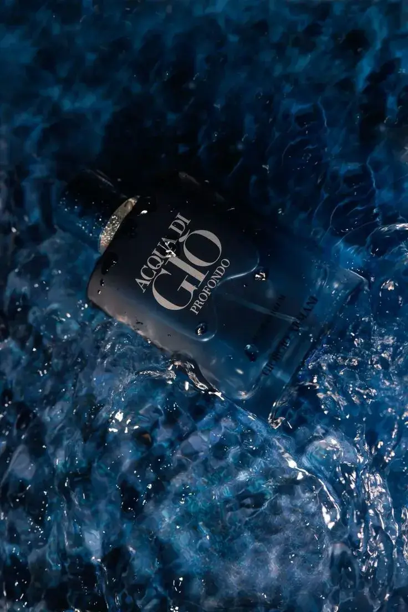
Acqua Di Giò
Inmersión marina con notas acuáticas puras, sal de mar, mandarina verde y un toque refinado de pachulí.
Acqua Di Giò Profondo
Una inmersión marina intensa que combina notas acuáticas profundas con esencias aromáticas de romero, lavanda y un fondo elegante de pachulí.
- • Concentración: Eau de Parfum
- • Duración promedio: 7 a 9 horas
- • Estación ideal: Verano / Días Soleados
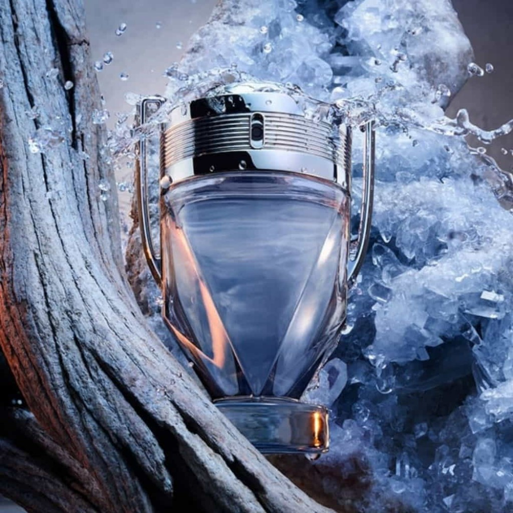
Invictus Aqua
Potente combinación de madera de guayaco, ámbar gris y refrescantes acordes marinos y yodados.
Invictus Aqua Edition
Una versión cargada de dinamismo atlético que sustituye la densidad dulce del original por brisa salina y granos de violeta.
- • Concentración: Eau de Toilette
- • Duración promedio: 7 a 8 horas
- • Estación ideal: Primavera / Verano
Nautica Voyage
Notas de manzana verde crujiente, hojas verdes acuáticas, flor de loto y mimosa sobre madera de cedro.
Nautica Voyage Original
Aroma acuático por excelencia para hombres activos. Ofrece una estela fresca, limpia e inconfundible ideal para el día a día.
- • Concentración: Eau de Toilette
- • Duración promedio: 6 a 8 horas
- • Estación ideal: Días calurosos / Salidas informales
Aromas Amaderados
Elegancia, carácter y sofisticación perdurable. Formulados con esencias nobles como sándalo, cedro, vetiver y toques ahumados para quienes buscan una presencia imponente.
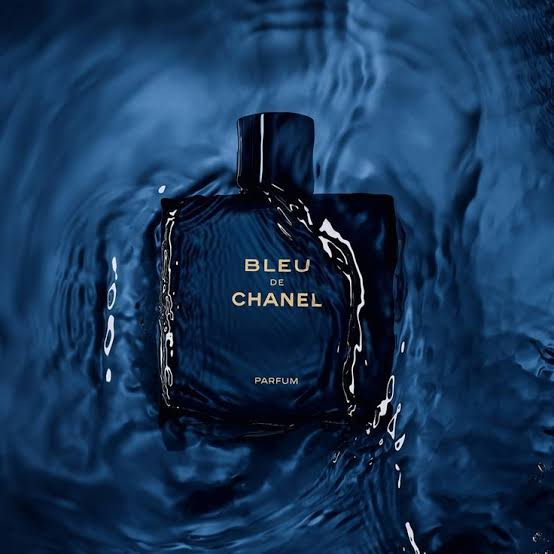
Bleu de Chanel
Carácter noble con matices de cedro, sándalo de Nueva Caledonia y un sugerente acorde de incienso ahumado.
Bleu de Chanel Eau de Parfum
Elegancia amaderada refinada de la casa Chanel. Abre con notas chispeantes de pomelo antes de revelar un corazón profundo de cedro, sándalo e incienso.
- • Concentración: Eau de Parfum
- • Duración promedio: 8 a 10 horas
- • Estación ideal: Climas Templados / Noche
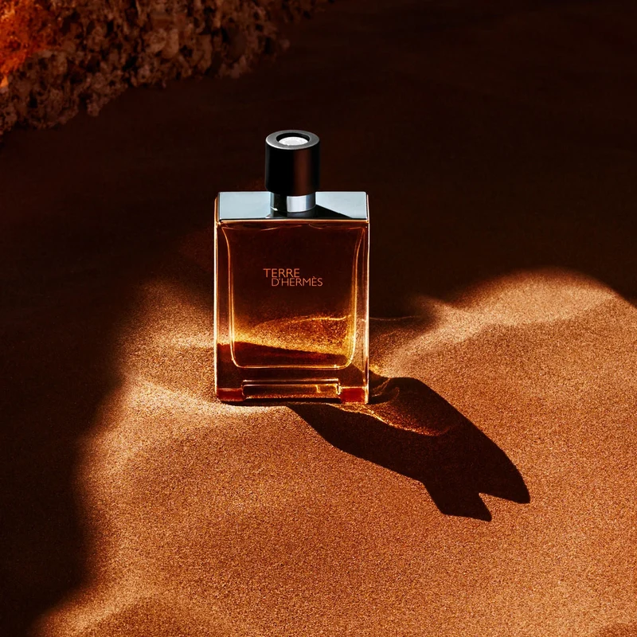
Terre d'Hermès
Estructura terrosa mineral que fusiona cedro con pimienta negra, benjuí y chispa de naranja amarga.
Terre d'Hermès Pure Parfum
Metáfora sobre la materia y su metamorfosis. Una fragancia que expresa la fuerza amaderada del cedro mezclada con notas minerales de pedernal.
- • Concentración: Pure Parfum
- • Duración promedio: 9 a 11 horas
- • Estación ideal: Otoño / Eventos Formales

Oud Wood
Rara e inestimable madera de oud combinada con palisandro, cardamomo, vetiver y sándalo cremoso.
Tom Ford Oud Wood
Uno de los ingredientes más raros y valiosos del mundo de la perfumería. El humo ahumado del Oud envuelve el espacio con una distinción incomparable.
- • Concentración: Eau de Parfum (Nicho)
- • Duración promedio: 8 a 10 horas
- • Estación ideal: Invierno / Noche
Aromas Dulces
Mezclas magnéticas, cálidas y cautivadoras. Dominadas por acordes de vainilla gourmand, haba tonka, cacao y ámbar para quienes disfrutan dejar una estela adictiva e inolvidable.

Tobacco Vanille
Opulenta mezcla de vainilla cremosa, cacao, frutos secos y hoja de tabaco dulce aromático.
Tobacco Vanille Private Blend
Una interpretación moderna de un club de caballeros inglés. Vainilla aterciopelada y tabaco dulce que generan una experiencia reconfortante y magnética.
- • Concentración: Eau de Parfum (Nicho)
- • Duración promedio: 10 a 12 horas
- • Estación ideal: Otoño / Invierno
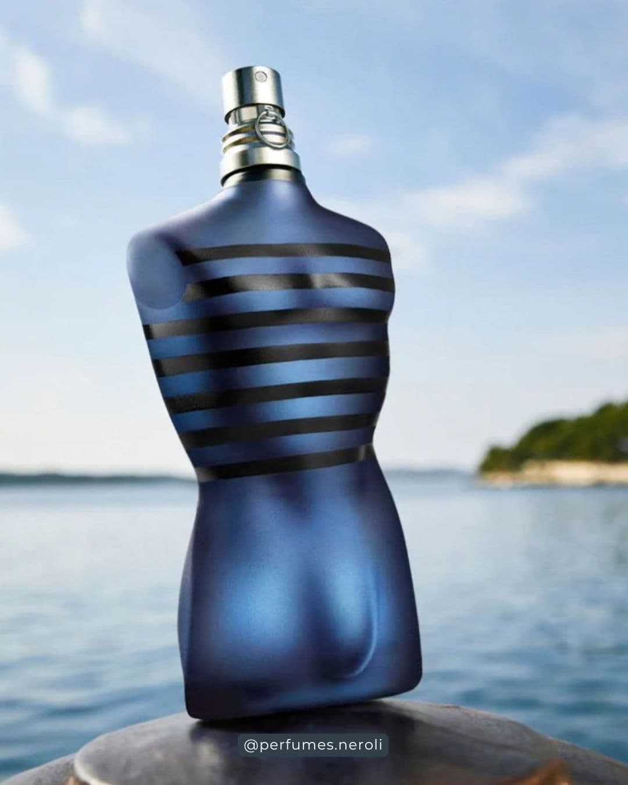
Ultra Male
Pera negra dulce, lavanda de sotobosque, canela y una potente base de vainilla negra de Madagascar.
Jean Paul Gaultier Ultra Male
Un aroma diseñado para llamar la atención en la noche. La combinación de fruta confitada y vainilla crea una proyección sin igual.
- • Concentración: Eau de Toilette Intense
- • Duración promedio: 9 a 11 horas
- • Estación ideal: Fiestas / Climas fríos

Stronger With You
Acorde dulce de castaña glaseada, pimienta rosa, salvia aromática y esencia de vainilla ahumada.
Emporio Armani Stronger With You
Perfume juvenil, moderno y sumamente reconfortante. Destaca por su equilibrio entre especias suaves y la dulzura de la castaña caramelizada.
- • Concentración: Eau de Toilette
- • Duración promedio: 8 a 10 horas
- • Estación ideal: Citas / Otoño
Aromas Especiados
Intensidad, misterio y sensualidad ardiente. Una explosión sensacional inspirada en pimientas, canela, cardamomo y resinas exóticas para quienes no temen destacar.
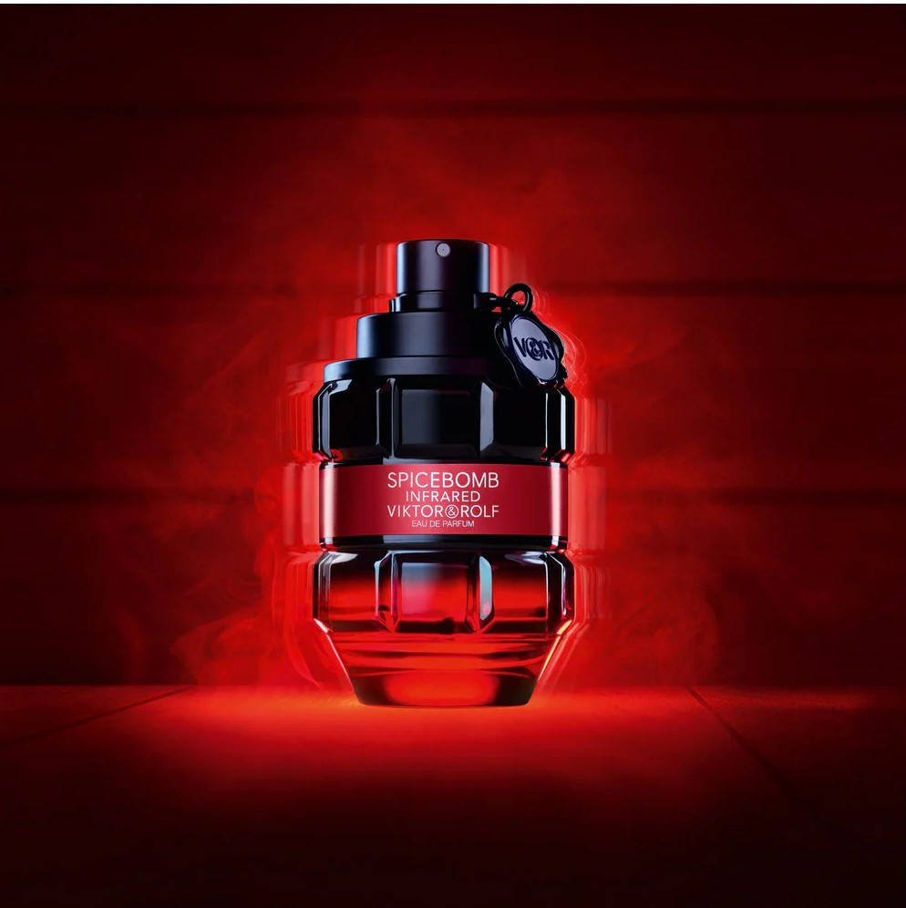
Spicebomb Infrared
Fuego embotellado con pimienta roja habanera, canela abrasadora, cardamomo y resina de tabaco.
Spicebomb Infrared EDP
Un estallido ardiente diseñado para destacar. Su composición une la intensidad abrasadora de la pimienta roja habanera y la canela con un sutil fondo masculino de tabaco.
- • Concentración: Eau de Parfum
- • Duración promedio: 7 a 9 horas
- • Estación ideal: Noches de Cita / Climas Fríos
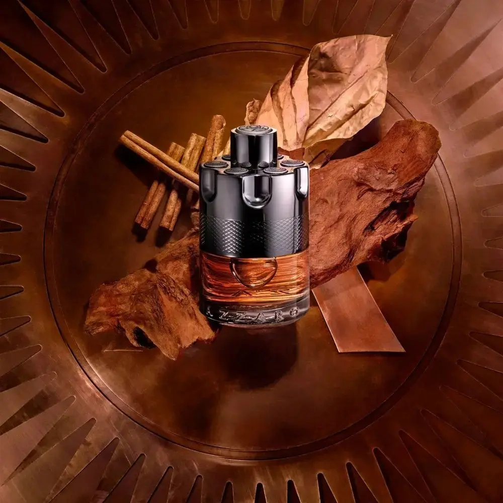
Wanted by Night
Canela de Ceilán, comino picante, incienso, tabaco especiado y cedro rojo en una mezcla magnética.
Azzaro Wanted by Night
Una fragancia amaderada-especiada extremadamente seductora. La canela domina el inicio abriendo paso a notas de cuero y resinas cálidas.
- • Concentración: Eau de Parfum
- • Duración promedio: 8 a 10 horas
- • Estación ideal: Noche / Invierno
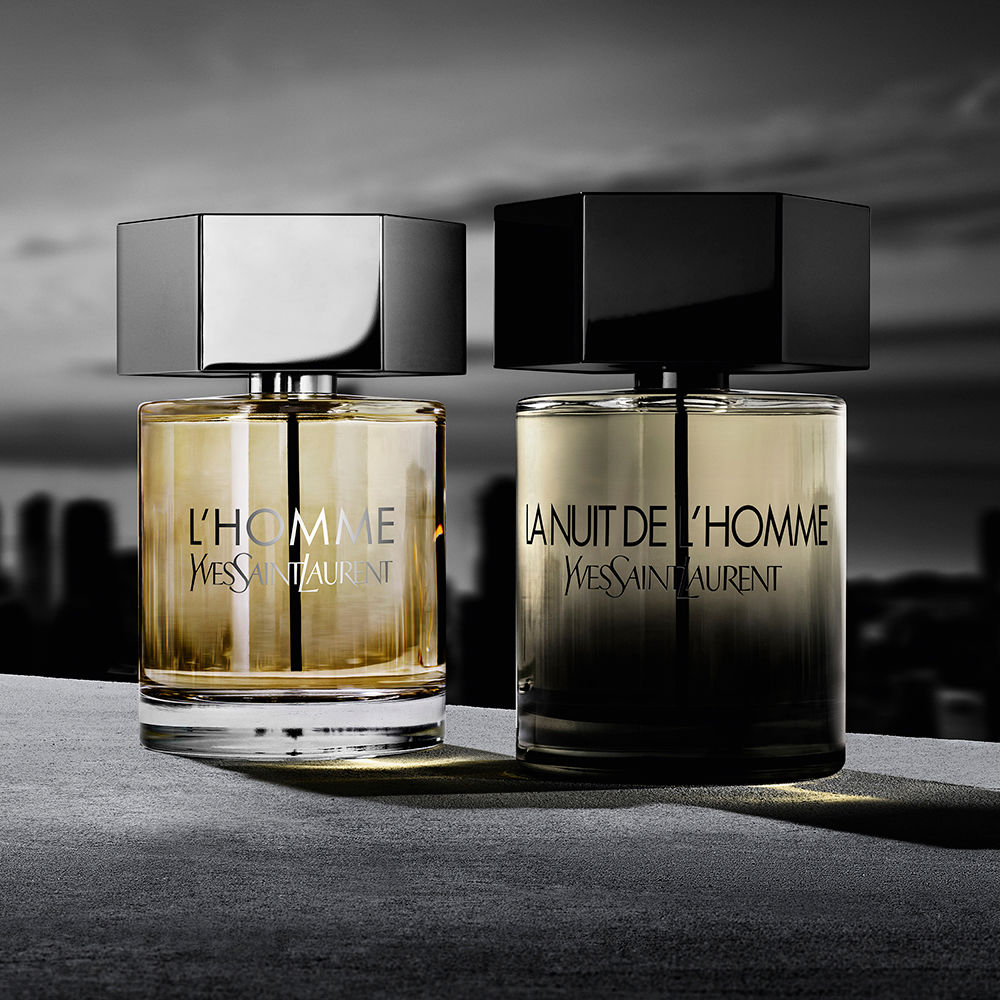
La Nuit de L'Homme
Sofisticado acorde de cardamomo guatemalteco, pimienta negra, lavanda y madera de cedro virginiano.
Yves Saint Laurent La Nuit de L'Homme
El rey indiscutible de las fragancias de seducción íntima. El cardamomo proyecta un aura misteriosa y envolvente que despierta curiosidad.
- • Concentración: Eau de Toilette
- • Duración promedio: 6 a 7 horas
- • Estación ideal: Citas románticas / Noche
Aromas Frutales
Juventud, modernidad y frescura jugosa. Composiciones equilibradas de piña madura, manzana verde, grosellas y frutas tropicales entrelazadas con maderas elegantes.
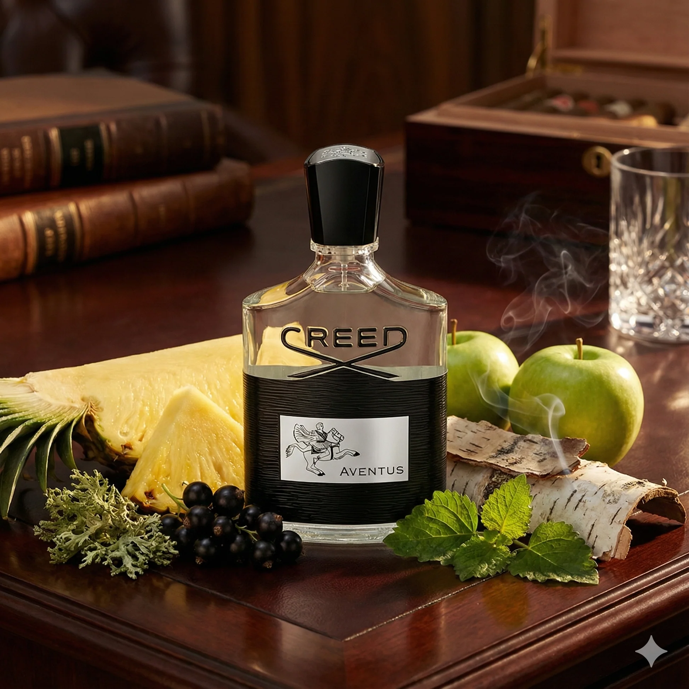
Creed Aventus
Icono global con piña madura fresca, manzana verde francesa, bergamota y abedul ahumado.
Creed Aventus Original
La fragancia frutal madura más aclamada del mundo. Se presenta con una icónica inyección de piña madura fresca y un sofisticado fondo ahumado.
- • Concentración: Eau de Parfum (Premium)
- • Duración promedio: 8 a 10 horas
- • Estación ideal: Todo el Año / Versátil
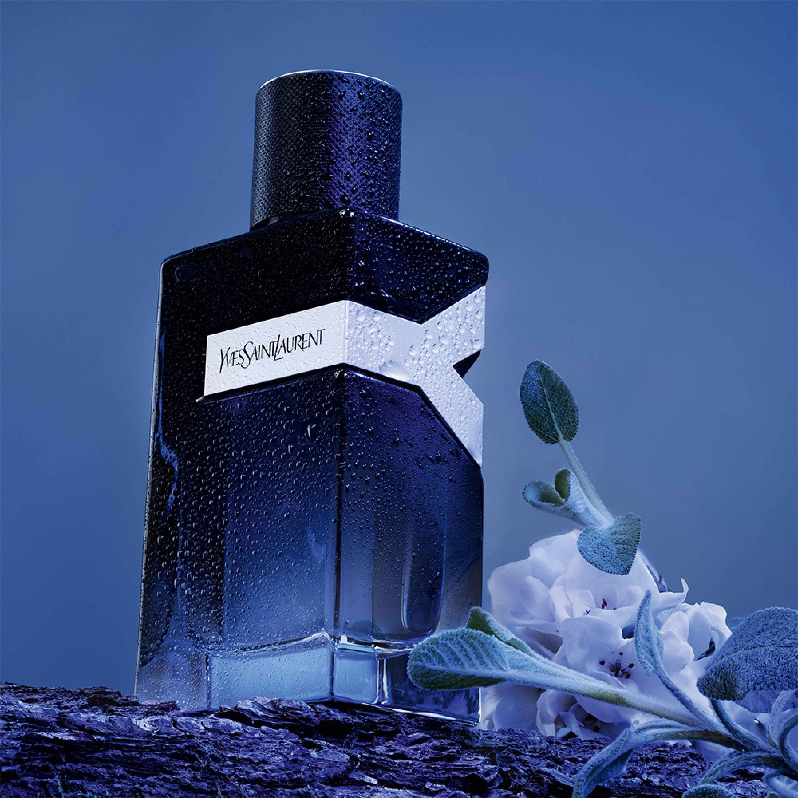
YSL Y Eau de Parfum
Apertura frutal de manzana verde crujiente, jengibre picante, salvia y madera de ámbar.
YSL Y Eau de Parfum
Una fragancia azul ultra moderna donde la fruta adquiere un perfil limpio, electrizante y masculino de larga duración.
- • Concentración: Eau de Parfum
- • Duración promedio: 9 a 10 horas
- • Estación ideal: Todo el año / Oficina o Noche
Xerjoff Erba Pura
Cesta de frutas mediterráneas jugosas envueltas en almizcle blanco y un fondo de ámbar dulce.
Xerjoff Erba Pura
Una sinfonía frutal exuberante y potente. Extrae la esencia pura de frutas de Sicilia creando un aura inolvidable y duradera.
- • Concentración: Eau de Parfum (Nicho)
- • Duración promedio: 12+ horas
- • Estación ideal: Primavera / Verano / Eventos